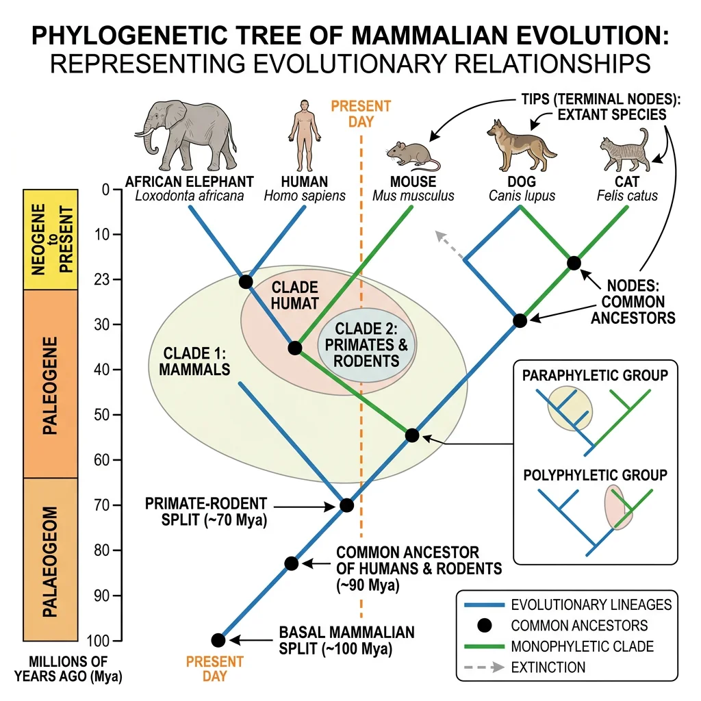
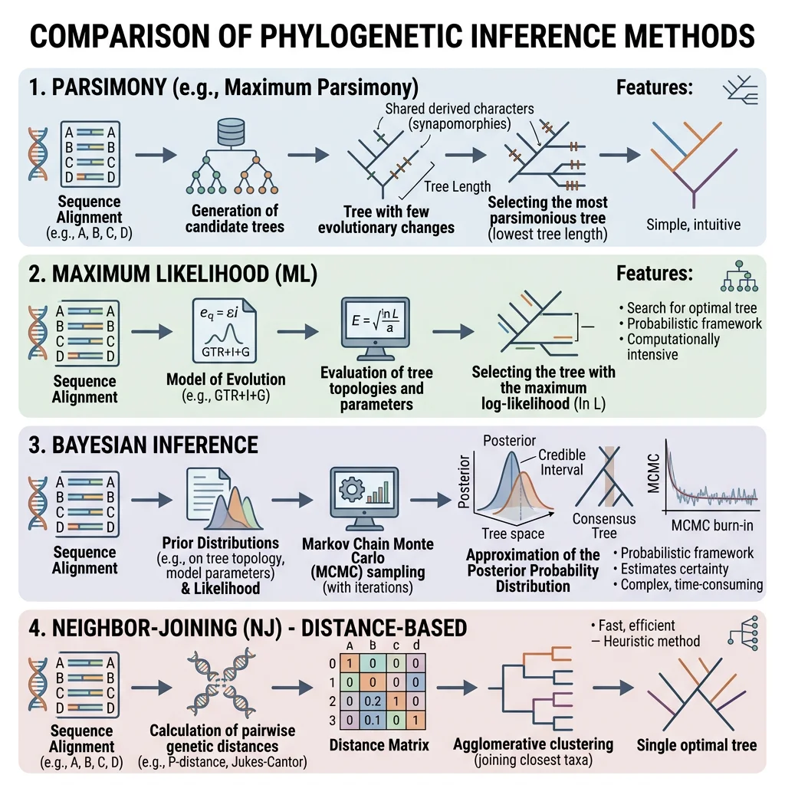
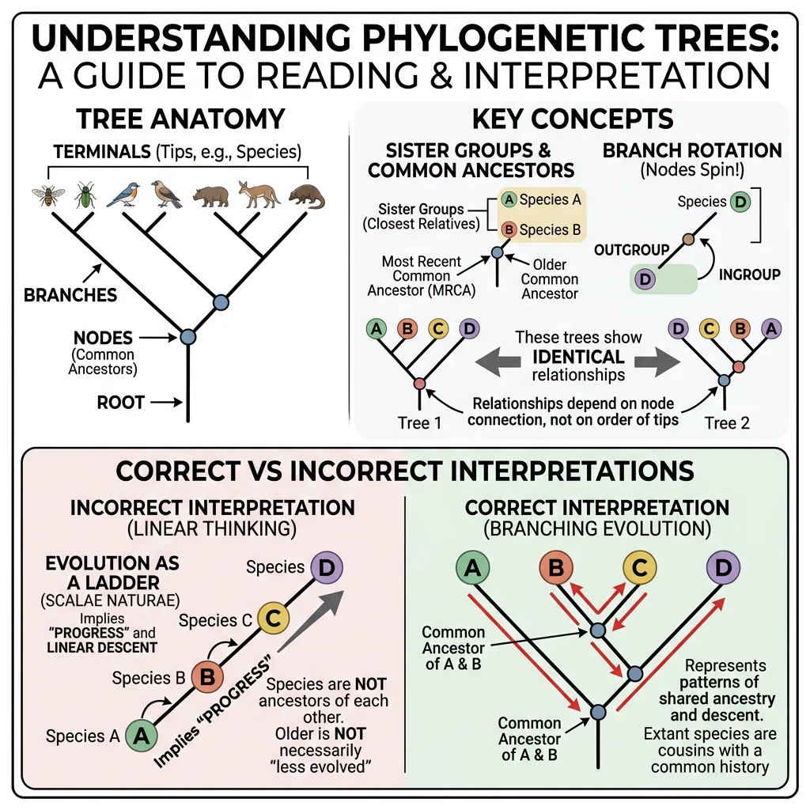
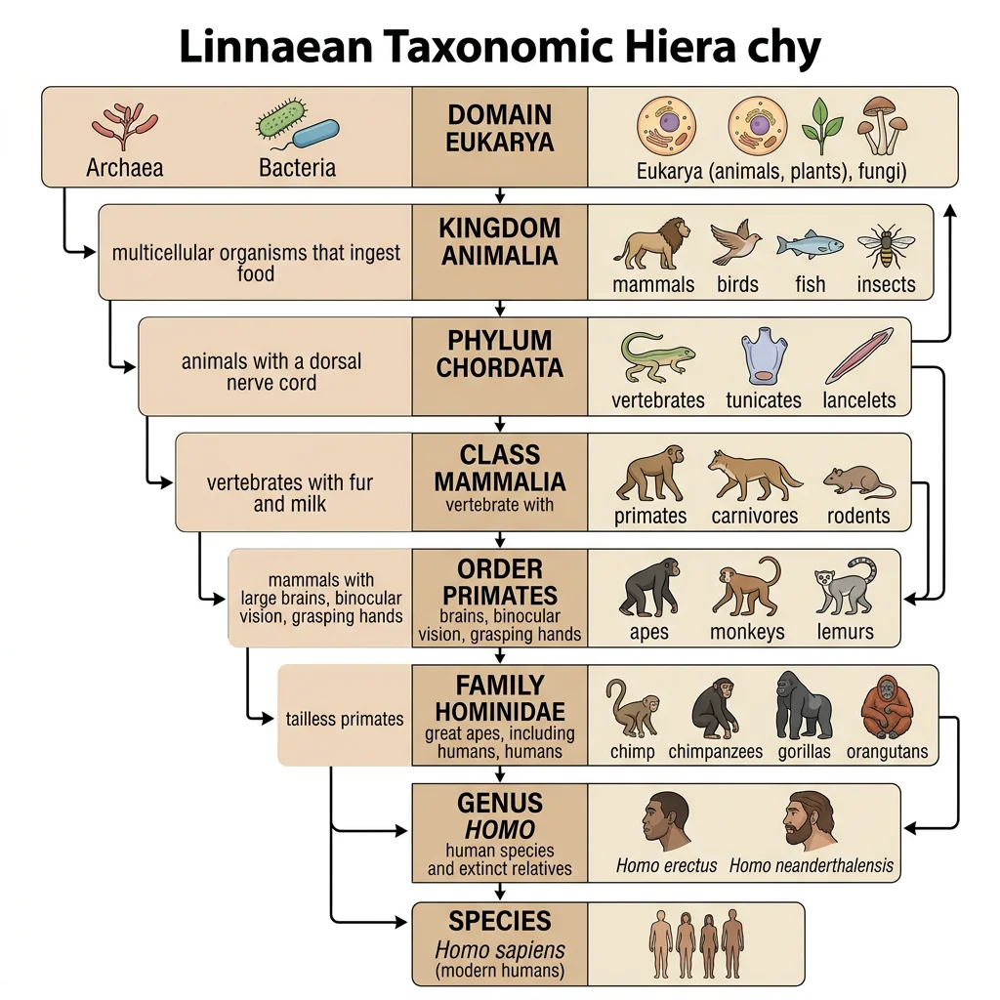
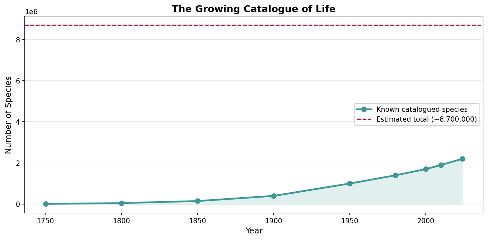
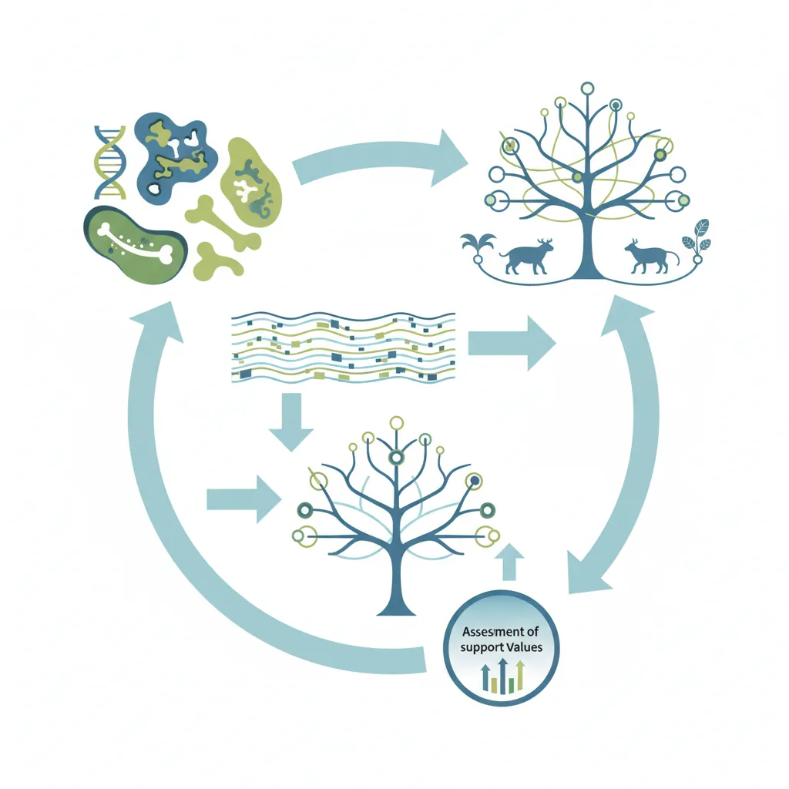

Evolutionary Biology Mastery
Darwin, Wallace & Natural Selection
Foundations, selection types, inclusive fitness, trade-offsGenetics of Evolution
DNA, population genetics, Hardy-Weinberg, molecular clocksSpeciation & Adaptive Radiation
Species concepts, reproductive isolation, rapid diversificationPhylogenetics & Taxonomy
Tree thinking, cladistics, molecular phylogenetics, classificationHuman Evolution & Migration
Hominin lineage, fossil evidence, Neanderthals, cultural evolutionCo-evolution & Symbiosis
Arms races, host-parasite, endosymbiosis, holobiontMass Extinctions & Biodiversity
Big Five extinctions, biodiversity patterns, conservationEvolutionary Developmental Biology
Hox genes, morphological innovation, heterochronyBehavioral & Social Evolution
Cooperation, game theory, sexual strategies, social insectsMathematical & Theoretical Evolution
Fitness landscapes, adaptive dynamics, ESS, selection modelsPaleontology & Fossil Interpretation
Radiometric dating, transitional fossils, taphonomyEvolutionary Genomics
Comparative genomics, gene duplication, HGT, epigeneticsTree Thinking
Phylogenetics is the science of reconstructing the evolutionary history of organisms — mapping the branching patterns of descent from common ancestors. The result is a phylogenetic tree (or phylogeny), a visual hypothesis of how species are related. "Tree thinking" is the ability to read, interpret, and reason about these trees — a fundamental skill in modern biology.
Charles Darwin himself sketched the first phylogenetic tree in his 1837 notebook with the annotation "I think." Today, phylogenetic analysis underpins virtually every branch of biology — from medicine (tracking viral evolution) to conservation (identifying genetically distinct populations) to forensics (tracing disease outbreaks).

Cladistics vs Traditional Taxonomy
Traditional (evolutionary) taxonomy, championed by Ernst Mayr and George Gaylord Simpson, classifies organisms based on both shared ancestry and overall similarity. It allows paraphyletic groups — for example, "Reptilia" traditionally excludes birds, even though birds evolved from dinosaurs. This approach values the idea that birds are so different from other reptiles that they deserve their own class.
Cladistics (phylogenetic systematics), developed by Willi Hennig in the 1950s, insists that only shared derived characters (synapomorphies) should define groups, and that all valid groups must be monophyletic (containing an ancestor and all of its descendants). Under cladistics, either Reptilia must include birds, or it is not a valid group.
graph TD
ANC["Common\nAncestor"] --> N1["Node\n(Speciation)"]
ANC --> N2["Node\n(Speciation)"]
N1 --> SP1["Species A\n(Sister taxa)"]
N1 --> SP2["Species B\n(Sister taxa)"]
N2 --> N3["Node"]
N2 --> SP3["Species C"]
N3 --> SP4["Species D"]
N3 --> SP5["Species E\n(Outgroup)"]
Monophyletic, Paraphyletic & Polyphyletic Groups
Understanding these three types of groupings is essential for reading phylogenies correctly:
| Group Type | Definition | Example | Status in Cladistics |
|---|---|---|---|
| Monophyletic (Clade) | Common ancestor + all descendants | Mammalia (all mammals including whales, bats, humans) | Valid ✓ |
| Paraphyletic | Common ancestor + some (not all) descendants | "Reptilia" excluding birds; "fish" excluding tetrapods | Invalid ✗ |
| Polyphyletic | Members do NOT share a recent common ancestor | "Warm-blooded animals" (birds + mammals evolved endothermy independently) | Invalid ✗ |
Phylogenetic Methods
Building a phylogenetic tree requires data (characters from organisms) and an algorithm (a method for finding the best tree). The field has evolved from physical trait comparison to sophisticated statistical analyses of DNA sequences.

Morphological Comparisons
The oldest method of phylogenetics compares physical structures across species. Homologous structures — those inherited from a common ancestor — are the basis for grouping. The forelimb bones of a human arm, whale flipper, bat wing, and horse leg share the same underlying bone pattern (humerus → radius + ulna → carpals → digits), despite serving completely different functions. This shared structure reveals common ancestry.
Morphological data remains essential for classifying fossils (which lack DNA) and for organisms that are difficult to collect for molecular work. However, morphological analysis is vulnerable to errors from convergent evolution — where unrelated organisms evolve similar structures independently (e.g., the camera eye evolved independently in vertebrates and cephalopods).
Molecular Phylogenetics
Molecular phylogenetics uses DNA, RNA, or protein sequences to infer evolutionary relationships. Because DNA sequences accumulate mutations over time, more closely related species share more sequence similarity — just as closely related languages share more vocabulary.
Multiple Sequence Alignment (MSA)
The first step in molecular phylogenetics is aligning homologous sequences. Given DNA sequences from multiple species for the same gene, the algorithm inserts gaps (representing insertions or deletions) to maximise the number of matching positions. Common tools include MUSCLE, MAFFT, and ClustalW. The alignment is the foundation for all downstream analysis — errors in alignment propagate into errors in the tree.
import numpy as np
# Simple pairwise distance matrix from DNA sequences
# Each sequence represents a short gene region from 4 species
sequences = {
'Human': 'ATGCGATCGA',
'Chimpanzee': 'ATGCGATCGA',
'Gorilla': 'ATGCAATCGA',
'Orangutan': 'ATGCAATCAA'
}
species = list(sequences.keys())
n = len(species)
dist_matrix = np.zeros((n, n))
for i in range(n):
for j in range(n):
seq1, seq2 = sequences[species[i]], sequences[species[j]]
differences = sum(a != b for a, b in zip(seq1, seq2))
dist_matrix[i][j] = differences / len(seq1)
print("Pairwise Distance Matrix:")
print(f"{'':>12}", end='')
for s in species:
print(f"{s:>12}", end='')
print()
for i, s in enumerate(species):
print(f"{s:>12}", end='')
for j in range(n):
print(f"{dist_matrix[i][j]:>12.2f}", end='')
print()
Commonly used molecular markers:
- Mitochondrial DNA (mtDNA) — fast-evolving, useful for closely related species (e.g., cytochrome b, COI for DNA barcoding)
- Ribosomal RNA (rRNA) — conserved, ideal for deep divergences (e.g., 16S rRNA for bacteria, 18S rRNA for eukaryotes)
- Nuclear genes — provide independent evidence from mtDNA; useful for resolving conflicting signals
- Whole genomes — genomic-scale data provides the most comprehensive picture but requires significant computational resources
Bayesian & Likelihood Approaches
Modern phylogenetics uses statistical model-based methods that explicitly model the process of DNA evolution. The two dominant approaches are:
| Method | Principle | Software | Advantage |
|---|---|---|---|
| Maximum Likelihood (ML) | Finds the tree that maximises the probability of observing the data | RAxML, IQ-TREE, PhyML | Statistically rigorous, handles complex models |
| Bayesian Inference | Calculates the posterior probability of each tree given the data and prior beliefs | MrBayes, BEAST, RevBayes | Provides probability of each clade, integrates time calibration |
| Maximum Parsimony | Prefers the tree requiring the fewest character changes | PAUP*, TNT | Intuitive; fast for small datasets |
| Neighbour-Joining | Distance-based clustering algorithm | MEGA, SplitsTree | Very fast; good for exploratory analysis |
Interpreting Trees
Phylogenetic trees are hypotheses about evolutionary relationships, and reading them correctly requires understanding several key conventions. Many common misunderstandings arise from intuitions that don't apply to tree structures.

Common Ancestry & Sister Groups
Every internal node on a phylogenetic tree represents a hypothetical common ancestor. Two groups that share an immediate common ancestor (branch from the same node) are called sister groups or sister taxa. Sister groups are each other's closest relatives.
Reading trees correctly:
- Branches can rotate freely — the order of taxa at the tips is arbitrary. Rotating a branch around a node does not change the relationships
- Relatedness is determined by branching pattern, not by proximity at the tips. Two taxa that appear next to each other are not necessarily more closely related than taxa farther apart
- Branch length can represent time (chronogram), amount of change (phylogram), or be uninformative (cladogram)
Divergence Times
A time-calibrated phylogeny (chronogram) estimates when lineages diverged. This is done by combining molecular data with fossil calibrations — using the known age of fossils to anchor the molecular clock.
Bayesian Evolutionary Analysis by Sampling Trees (BEAST)
BEAST (Drummond et al., 2006) is one of the most widely used programs for estimating time-calibrated phylogenies. It uses Bayesian statistics and Markov chain Monte Carlo (MCMC) sampling to simultaneously estimate tree topology, branch lengths, and divergence times while accounting for rate variation across lineages (relaxed molecular clocks). BEAST has been used to date everything from the origin of HIV to the diversification of mammals after the K–Pg extinction.
Homology vs Analogy
Distinguishing homologous traits (shared because of common ancestry) from analogous traits (shared because of convergent evolution) is critical for building accurate phylogenies. Analogous traits mislead phylogenetic analysis — they suggest false relationships.
| Feature | Homology | Analogy (Homoplasy) |
|---|---|---|
| Origin | Inherited from common ancestor | Independently evolved |
| Underlying structure | Similar (same bones, genes) | Different (different developmental origin) |
| Example | Human arm and whale flipper (same bones) | Bird wing and insect wing (different structure) |
| Phylogenetic value | Informative — reveals true relationships | Misleading — suggests false relationships |
Classification Systems
Taxonomy is the science of naming, describing, and classifying organisms. It provides the universal language that allows biologists worldwide to communicate unambiguously about the same organism.

Linnaean Taxonomy
Carl Linnaeus (1707–1778) established the hierarchical classification system and binomial nomenclature still used today. Every species receives a two-part Latin name: genus + specific epithet (e.g., Homo sapiens). The hierarchy from broadest to most specific:
| Rank | Human Example | Fruit Fly Example |
|---|---|---|
| Domain | Eukarya | Eukarya |
| Kingdom | Animalia | Animalia |
| Phylum | Chordata | Arthropoda |
| Class | Mammalia | Insecta |
| Order | Primates | Diptera |
| Family | Hominidae | Drosophilidae |
| Genus | Homo | Drosophila |
| Species | H. sapiens | D. melanogaster |
Nomenclature Rules & Codes
Naming organisms is not a free-for-all — it is governed by strict international codes that ensure every species has a single, universally recognised scientific name. These codes exist because without formal rules, the same organism might receive dozens of different names from different researchers speaking different languages, creating chaos in medicine, agriculture, and conservation.
| Code | Governs | Key Feature | Example |
|---|---|---|---|
| ICZN | Animals | Priority — the first validly published name wins | Tyrannosaurus rex Osborn 1905 |
| ICN | Plants, algae, fungi | Type specimens deposited in a herbarium | Arabidopsis thaliana (L.) Heynh. |
| ICNP | Prokaryotes | Requires a pure culture for valid description | Escherichia coli (Migula 1895) |
| ICTV | Viruses | Non-Latinised binomial names allowed since 2021 | Severe acute respiratory syndrome-related coronavirus |
All these codes share certain core principles:
- Principle of Priority — the oldest validly published name for an organism takes precedence. If two scientists independently describe the same species, the first published name wins and the later one becomes a junior synonym
- Type specimens — every species name is permanently anchored to a single preserved specimen (the holotype) kept in a museum or herbarium. If there is ever confusion about what a name refers to, scientists can examine the physical type specimen to resolve the dispute
- Binomial nomenclature — names always consist of a capitalised genus + lowercase specific epithet, written in italics: Homo sapiens, Canis lupus, Quercus robur
- Latin descriptions — traditionally, new species required a Latin diagnosis. Since 2012, the ICN also accepts English descriptions for plants, and the ICZN has long accepted any language
Domains of Life
In 1990, Carl Woese proposed the three-domain system based on ribosomal RNA (rRNA) phylogenetics, replacing the traditional five-kingdom system. This was one of the most significant reclassifications in the history of biology:
- Bacteria — prokaryotes with peptidoglycan cell walls (E. coli, Streptococcus, cyanobacteria)
- Archaea — prokaryotes that are genetically and biochemically distinct from Bacteria (methanogens, halophiles, thermophiles). Despite looking superficially similar to Bacteria, Archaea are more closely related to Eukarya
- Eukarya — organisms with membrane-bound nuclei (animals, plants, fungi, protists)
The Archaea Revolution
Before Woese's work, all prokaryotes were classified as "bacteria." By comparing 16S ribosomal RNA sequences, Woese discovered that what we called "bacteria" actually comprised two fundamentally different domains of life — as different from each other as either is from eukaryotes. His initial 1977 paper was met with fierce resistance; many microbiologists refused to accept the three-domain model for over a decade. Today, it is universally accepted and has been confirmed by whole-genome analyses.
Modern Genomic Classification
Genomic data is now transforming taxonomy. Key developments include:
- DNA barcoding — using a short standardised gene region (COI for animals, rbcL + matK for plants) to identify species, analogous to scanning a barcode in a supermarket
- Metagenomics — sequencing DNA from environmental samples (soil, seawater) to discover organisms that cannot be cultured in the laboratory. This has revealed vast "dark matter" of microbial diversity
- Phylogenomics — using hundreds or thousands of genes simultaneously to build phylogenies, resolving relationships that single-gene analyses could not
import numpy as np
import matplotlib.pyplot as plt
# Species discovery curve — known species over time
years = [1750, 1800, 1850, 1900, 1950, 1980, 2000, 2010, 2024]
known_species = [10000, 50000, 150000, 400000, 1000000, 1400000, 1700000, 1900000, 2200000]
estimated_total = 8700000 # estimated total eukaryotic species
plt.figure(figsize=(10, 5))
plt.plot(years, known_species, 'o-', color='#3B9797', linewidth=2.5, markersize=7, label='Known catalogued species')
plt.axhline(y=estimated_total, color='#BF092F', linestyle='--', linewidth=1.5, label=f'Estimated total (~{estimated_total:,})')
plt.fill_between(years, known_species, alpha=0.15, color='#3B9797')
plt.xlabel('Year', fontsize=12)
plt.ylabel('Number of Species', fontsize=12)
plt.title('The Growing Catalogue of Life', fontsize=14, fontweight='bold')
plt.legend(fontsize=10)
plt.grid(axis='y', alpha=0.3)
plt.tight_layout()
plt.show()

Integrative Taxonomy & the PhyloCode
Modern taxonomy no longer relies on a single type of evidence. Integrative taxonomy combines multiple independent lines of evidence — morphology, DNA sequences, ecology, behaviour, and geographic distribution — to delimit and describe species. This approach is especially valuable for cryptic species: organisms that look identical under the microscope but are genetically and reproductively distinct.
Cryptic Species in Neotropical Frogs
In the Amazon rainforest, what was long classified as a single widespread frog species (Rhinella margaritifera) was revealed by integrative taxonomy to be a complex of at least 15 distinct species. Molecular phylogenetics showed deep genetic divergences (>8% in mitochondrial COI), bioacoustic analysis revealed different mating calls, and ecological niche modelling showed distinct habitat preferences. None of these lines of evidence alone was sufficient — morphological overlap was extensive, and individual gene trees conflicted. Only by integrating all data sources could researchers confidently delimit species boundaries.
A radical alternative to Linnaean ranks is the PhyloCode, a formal set of rules for naming clades (monophyletic groups) that abandons fixed ranks entirely. Instead of forcing organisms into Domain → Kingdom → Phylum → Class hierarchies, the PhyloCode defines names by reference to phylogenetic relationships:
| Feature | Linnaean System | PhyloCode |
|---|---|---|
| Ranks | Fixed hierarchy (Kingdom, Phylum, etc.) | No mandatory ranks |
| Group validity | Allows paraphyletic groups (e.g., "Reptilia") | Only monophyletic clades are named |
| Definition style | Diagnosed by shared characters | Defined by ancestry (node-based, stem-based, or apomorphy-based) |
| Species naming | Binomial (Genus species) | Binomial retained, but genus not required as rank |
| Adoption | Universal, centuries of use | Published 2020, adopted by some systematists |
Exercises & Review

Exercise 1: Group Classification
Classify each of the following as monophyletic, paraphyletic, or polyphyletic:
- All descendants of the most recent common ancestor of birds and crocodiles
- All "warm-blooded" animals (birds + mammals)
- "Reptilia" that excludes birds
- Primates (lemurs, monkeys, apes, humans)
Show Answers
- Monophyletic — this is Archosauria, containing an ancestor and all descendants
- Polyphyletic — endothermy evolved independently in birds and mammals
- Paraphyletic — excludes birds, which evolved from within the reptile lineage
- Monophyletic — all share a single common ancestor
Exercise 2: Reading a Phylogeny
Given the tree: ((Human, Chimp), Gorilla), Orangutan), answer:
- What is the sister group of Human?
- What is the sister group of the (Human, Chimp) clade?
- Which species is the outgroup?
Show Answers
- Chimpanzee — shares the most recent common ancestor with Human
- Gorilla — branches from the same node as the (Human, Chimp) clade
- Orangutan — the most distantly related taxon, branches earliest
Exercise 3: Pairwise Distance Calculation
Calculate the pairwise distance between Species A (ATGCCG) and Species B (ATACCG). Express as the proportion of sites that differ.
Show Answer
Position 3: G vs A (1 difference out of 6 sites). Distance = 1/6 ≈ 0.167 (16.7%).
Downloadable Worksheet
Phylogenetics & Taxonomy Worksheet
Document your phylogenetic analyses, tree interpretations, and taxonomic classifications. Download as Word, Excel, or PDF.
Conclusion & Next Steps
Phylogenetics provides the framework for understanding how all life on Earth is related. From Hennig's cladistic revolution to modern Bayesian analyses of whole genomes, we can now reconstruct evolutionary history with remarkable precision. The tree of life is not merely an academic exercise — it guides drug discovery, disease tracking, conservation prioritisation, and our understanding of our own origins.